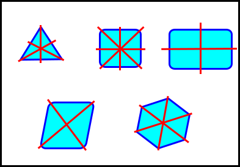
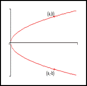
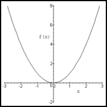
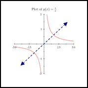
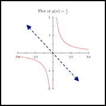

Symmetry
Point Symmetry2 points are symmetric wrt (with respect to) another point when that other point is the midpoint

A common point of symmetry... origin (0,0)
Point Symmetry wrt the Origin
when $(x,y)$ & $(-x,-y)$ ∈ the same function or graph
Ex) Find the coordinates of $P^1$ if $P(-3,2) \text" & " P^1$ are symmetric wrt point $M(1,1)$
$midpoint_{PP^1}=({x_1+x_2}/2,{y_1+y_2}/2)$
$(1,1)=({-3+x_2}/2,{2+y_x}/2)$
$\table 1={-3+x_2}/2, \text",", 1={2+y_2}/2; 2=-3+x_2, \text",", 2=2+y_2; 5=x_2, \text",", 0=y_x;$
$∴\text" " P^1(5,0)$
when $(x,y)$ & $(-x,-y)$ ∈ the same function or graph
Ex) Find the coordinates of $P^1$ if $P(-3,2) \text" & " P^1$ are symmetric wrt point $M(1,1)$
$midpoint_{PP^1}=({x_1+x_2}/2,{y_1+y_2}/2)$
$(1,1)=({-3+x_2}/2,{2+y_x}/2)$
$\table 1={-3+x_2}/2, \text",", 1={2+y_2}/2; 2=-3+x_2, \text",", 2=2+y_2; 5=x_2, \text",", 0=y_x;$
$∴\text" " P^1(5,0)$
Line Symmetry
2 points, $P\text" & " P^1$ are symmetric wrt a line when that line is the perpendicular bisector of $PP^1$
2 points, $P\text" & " P^1$ are symmetric wrt a line when that line is the perpendicular bisector of $PP^1$
| Symmetry wrt | x axis | y axis | $y=x$ | $y=-x$ |
|---|---|---|---|---|
| Definition | $(x,y)\text" & "(x,-y)$ ∈ the same graph | $(x,y)\text" & "(-x,y)$ ∈ the same graph | $(x,y)\text" & "(y,x)$ ∈ the same graph | $(x,y)\text" & "(-y,-x) $∈ the same graph |
| Sample Graph |  |  |  |  |
ex) Determine whether the graph of $y=6x^4-3x^2+1$ is symmetric wrt...
| Origin | $(-x,-y)$ | $\table -y=6(-x)^4-3(-x)^2+1; -y=6x^4-3x^2+1$ | No |
|---|---|---|---|
| x axis | $(x,-y)$ | $-y=6x^4-3x^2+1$ | No |
| y axis | $(-x,y)$ | $y=6(-4)^4-3(-x)^2+1$ | Yes |
| $y=x$ | $(y,x)$ | $x=6y^4-3y^2+1$ | No |
| $y=-x$ | $(-y,-x)$ | $\table -x=6(-y)^4-3(-y)^2+1; x=-6y^4+3y^2-1$ | No |
Even & Odd Functions
ex) Determine wheter each funciton is an even function, odd function or neither
$\table y=x^5-4x, \text"odd"; y=x^2-64, \text"even"; y=5x^3+6x-9, \text"neither"$
| Even Function | Odd Funciton |
|---|---|
| ALL even variable exponents | ALL odd variable exponents |
ex) Determine wheter each funciton is an even function, odd function or neither
$\table y=x^5-4x, \text"odd"; y=x^2-64, \text"even"; y=5x^3+6x-9, \text"neither"$
Homework